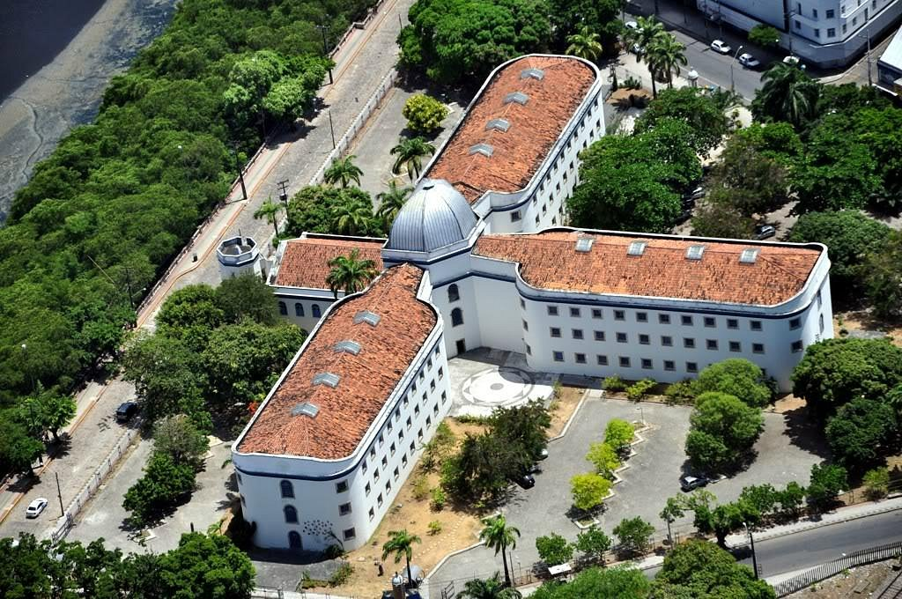

Praça do Marco Zero
A Praça do Marco Zero é um espaço aberto localizado em frente ao Marco Zero, com uma bela vista para o Rio Capibaribe. É um local muito frequentado por turistas e moradores da cidade.

Casa da Cultura
A Casa da Cultura é um antigo presídio transformado em centro cultural, onde você pode encontrar uma variedade de artesanato local, apresentações culturais e muito mais.
Marco zero
conheça o Marco Zero
Clique aqui